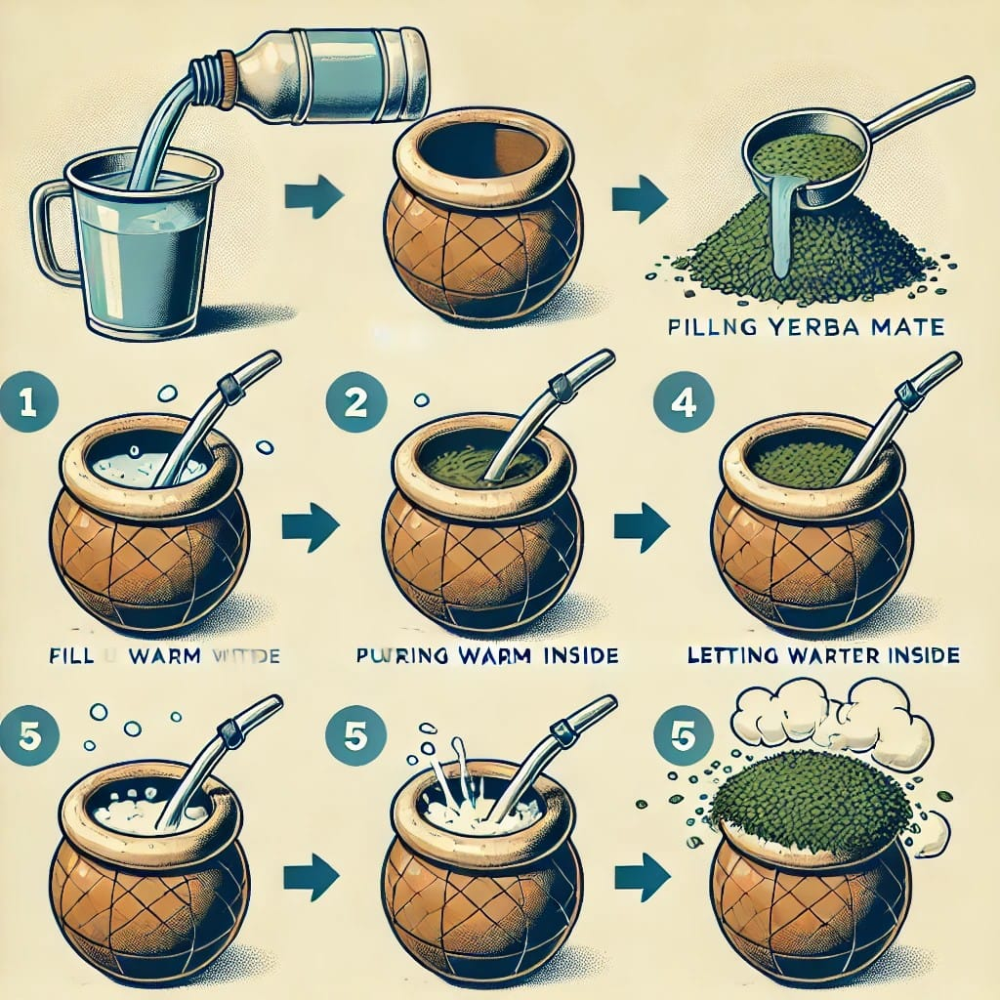

Curado del Mate
Acá te compartimos unos consejos para el curado del mate
Si compraste un mate nuevo, es fundamental curarlo antes de usarlo. Este proceso ayuda a sellar los poros del material, eliminar sabores amargos y evitar que se raje o se llene de hongos. Sigue estos pasos según el tipo de mate que tengas.
¿Porqué es importante curar el mate?
El curado permite:
- Evitar sabores indeseados del material.
- Prolongar su vida útil, evitando rajaduras o moho.
- Mejorar el sabor del mate con el tiempo.
Cómo curar un mate de calabaza (el más tradicional):
- Lavar bien el mate con agua tibia para quitar restos de polvo.
- Llenarlo con yerba usada (puede ser de un mate ya tomado).
- Agregar agua tibia y dejarlo reposar 24 horas.
- Vaciar y repetir este proceso durante 3 o 4 días.
- Luego, enjuagar con agua y secar bien.
Cómo curar un mate de madera:
- Untar el interior con grasa o aceite (puede ser manteca o aceite de coco).
- Llenarlo con yerba húmeda y dejarlo reposar 24 horas.
- Repetir el proceso 3 veces, cada vez con yerba nueva.
- Lavar con agua y secar bien antes de usarlo.
Cómo curar un mate de cerámica, vidrio o acero inoxidable:
Estos materiales no necesitan curado, solo un buen lavado antes del primer uso.
Mantenimiento del mate después de curarlo:
- Después de cada uso, vacía la yerba y enjuaga con agua tibia.
- Déjalo secar boca abajo en un lugar ventilado.
- Evita guardar el mate húmedo para prevenir hongos.
- Si notas mal olor, haz una limpieza profunda con bicarbonato y agua caliente.